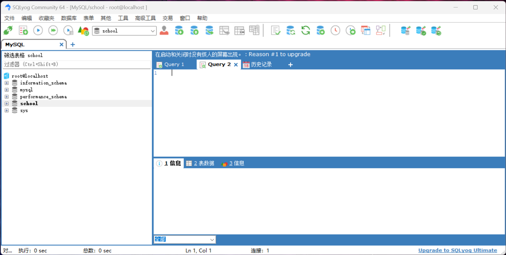

学习 MySQL 1
学习 MySQL 1
MySQL 是一个关系型数据库管理系统，由瑞典 MySQL AB 公司开发，目前属于 Oracle 旗下产品。MySQL 是最流行的关系型数据库管理系统之一，在 WEB 应用方面 MySQL 是最好的 RDBMS(Relational Database Management System，关系数据库管理系统)应用软件之一。
为什么要学习 MySQL？因为 MySQL 是最流行的关系型数据库管理系统之一，而且 MySQL 是开源的，可以免费使用。
什么是数据库
数据库 DB(Database) 是按照数据结构来组织、存储和管理数据的仓库，每个数据库都有一个或多个不同的 API 用于创建，访问，管理，搜索和复制所保存的数据。作用：数据库是存储数据的仓库，可以对数据进行增删改查。
数据库的分类
数据库的分类有很多种，常见的数据库分类有以下几种：
按照数据模型来分类
- 关系型数据库：MySQL、Oracle、SQL Server、DB2、Access
- 非关系型数据库：MongoDB、Redis、MemcacheDB
关系型数据库和非关系型数据库的区别：关系型数据库是使用表来存储数据，非关系型数据库是使用集合来存储数据。
按照数据库的部署方式来分类
- 本地数据库：MySQL、Oracle、SQL Server、DB2、Access
- 分布式数据库：MongoDB、Redis、MemcacheDB
本地数据库和分布式数据库的区别：本地数据库是部署在本地的，分布式数据库是部署在服务器上的。
按照数据库的功能来分类
- OLTP(On-Line Transaction Processing，联机事务处理)：MySQL、Oracle、SQL Server、DB2、Access
- OLAP(On-Line Analytical Processing，联机分析处理)：MongoDB、Redis、MemcacheDB
OLTP 和 OLAP 的区别：OLTP 是联机事务处理，主要用于日常的增删改查，OLAP 是联机分析处理，主要用于数据分析。
DMBS(Database Management System，数据库管理系统)：数据库管理系统是位于用户与操作系统之间的一层数据管理软件，它是一个大型的复杂的软件系统，它的主要功能是对数据库进行管理和维护，它还可以为用户提供一个统一的、抽象的数据视图，屏蔽了底层数据库的复杂性，使用户可以方便地使用数据库中的数据。
MySQL 的安装
MySQL Community Server 是 MySQL 的开源社区版，可以免费使用，MySQL Community Server 的下载地址为：https://dev.mysql.com/downloads
SQLyog 是 MySQL 的图形化管理工具，可以免费使用，SQLyog 的下载地址为：https://github.com/webyog/sqlyog-community
MySQL 8 安装教程： https://www.icoa.cn/a/960.html
SQLyog 安装教程：一直下一步即可
安装过程中出现奇怪问题一般是没有取得管理员权限，解决方法：右键以管理员身份运行。
SQLyog 的使用
SQLyog 是 MySQL 的图形化管理工具，可以通过 SQLyog 来管理 MySQL 数据库。

都有GUI了难道还要 教？ 用命令行？当然不是，但是命令行也是必须要学的，因为有些时候只能用命令行，比如服务器上没有图形化界面，只能通过命令行来管理数据库。
注意，我现在使用的版本是 SQLyog-13.2.0-0.x64Community，配置的 基字符集 为 utf8mb4，数据库排序规则为 utf8mb4_general_ci，如果你的版本不一样，那么可能会出现一些问题，比如插入中文乱码，这时候你可以尝试修改配置，或者卸载重装。
基本命令行操作
命令行的打开和关闭
启动 MySQL 服务
1 | net start mysql |
关闭 MySQL 服务
1 | net stop mysql |
登录 MySQL
1 | mysql -u root -p |
退出 MySQL
1 | exit |
修改密码
1 | ALTER USER 'root'@'localhost' IDENTIFIED BY 'new password'; |
刷新权限
1 | flush privileges; |
命令行的基本操作
在MySQL中，每条命令必须以分号结尾，否则会报错
注释
1 | -- 单行注释 |
查看数据库
1 | show databases; |
创建数据库
1 | create database 数据库名; |
删除数据库
1 | drop database 数据库名; |
使用数据库
1 | use 数据库名; |
查看数据库中的表
1 | show tables; |
创建表
1 | create table 表名( |
删除表
1 | drop table 表名; |
查看表结构
1 | desc 表名; |
查看表中的数据
1 | select * from 表名; |
插入数据
1 | insert into 表名(列名1, 列名2, ...) values(值1, 值2, ...); |
修改数据
1 | update 表名 set 列名1=值1, 列名2=值2, ... where 条件; |
删除数据
1 | delete from 表名 where 条件; |
名词解释
DDL(Data Definition Language，数据定义语言)：用来定义数据库对象：数据库、表、列等，关键字：create、drop、alter 等。
DML(Data Manipulation Language，数据操作语言)：用来对数据库中表的数据进行增删改，关键字：insert、update、delete 等。
DQL(Data Query Language，数据查询语言)：用来查询数据库中表的记录(数据)，关键字：select、from、where 等。
DCL(Data Control Language，数据控制语言)：用来定义数据库的访问权限和安全级别，及创建用户，关键字：grant、revoke 等。
CRUD(Create、Retrieve、Update、Delete，增删改查)：CRUD 是对数据库操作的基本要求，也就是对数据的增删改查。